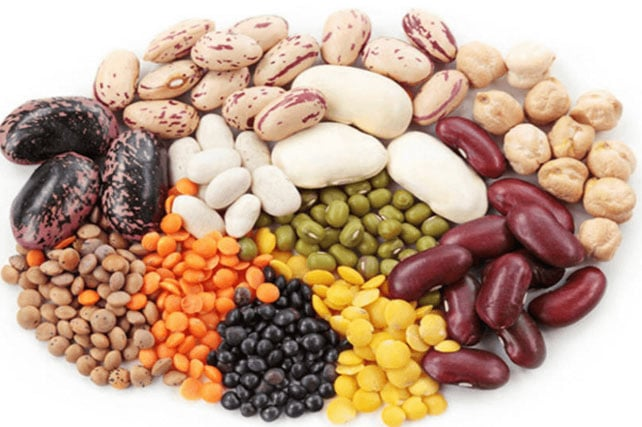
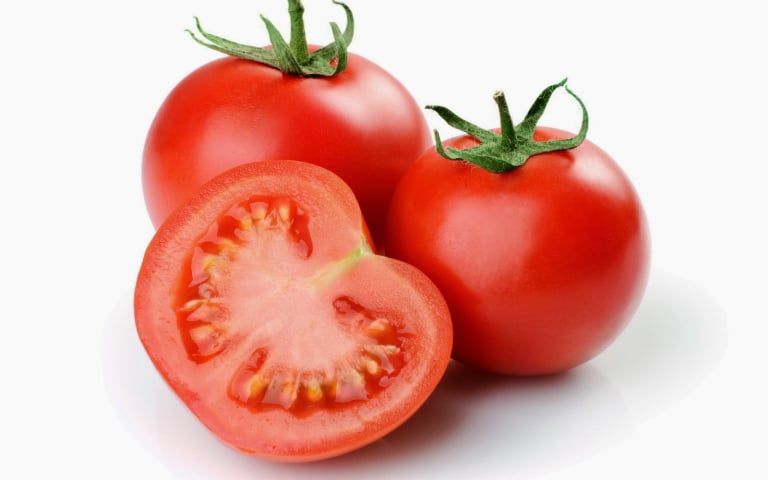
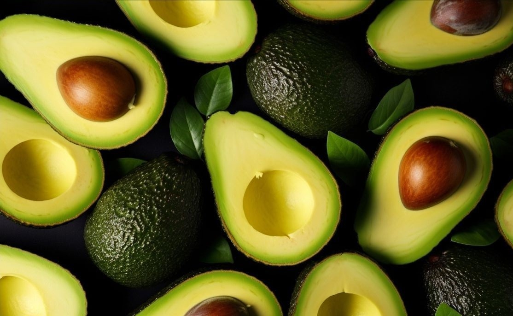

Makanan Ramah Diabetes




Olahraga diabetes ini bisa dibilang yang paling murah, karena bisa dilakukan di mana pun, tanpa perlu peralatan olahraga khusus. Meski cukup ekonomis, efektivitas jalan cepat dalam mengontrol kadar gula darah tidak perlu diragukan. Hasil ini dibuktikan dalam beberapa penelitian yang menunjukkan hasil kadar gula darah yang terkontrol pada mereka yang rutin melakukan jalan cepat sebanyak 5 kali seminggu, dengan durasi berjalan setidaknya selama 30 menit (dengan total durasi 150 menit/minggu).
Olahraga diabetes ini bisa dibilang yang paling murah, karena bisa dilakukan di mana pun, tanpa perlu peralatan olahraga khusus. Meski cukup ekonomis, efektivitas jalan cepat dalam mengontrol kadar gula darah tidak perlu diragukan. Hasil ini dibuktikan dalam beberapa penelitian yang menunjukkan hasil kadar gula darah yang terkontrol pada mereka yang rutin melakukan jalan cepat sebanyak 5 kali seminggu, dengan durasi berjalan setidaknya selama 30 menit (dengan total durasi 150 menit/minggu).
Bersepeda dapat memberikan beberapa manfaat bagi penderita diabetes. Selain mengontrol kadar gula darah, bersepeda juga bisa menjadi pilihan olahraga dengan intensitas rendah yang baik bagi kesehatan sendi dan tulang. Tidak hanya demikian, bersepeda juga dapat meningkatkan fungsi paru-paru dan kardiovaskular, yang sangat bermanfaat bagi penderita diabetes.
Salah satu komplikasi diabetes adalah terjadinya neuropati diabetes yang dapat menyebabkan peradangan pada sendi. Selain itu, obesitas yang memberikan beban lebih besar pada sendi juga bisa menyebabkan arthritis. Bersepeda akan membantu menurunkan berat badan sekaligus mengontrol kadar gula darah, serta mengurangi risiko terjadinya radang sendi, yang menjadikannya pilihan olahraga diabetes untuk dilakukan.
Selain tidak membebani sendi, berenang efektif dalam meningkatkan kesehatan jantung dan paru-paru. Dengan kelebihan olahraga diabetes ini, Anda bisa mulai merutinkan jadwal berenang. Namun, bagi Anda yang belum bisa berenang, jangan khawatir. Sebab Anda bisa menggantikannya dengan berjalan dalam air, aerobik akuatik maupun kegiatan senam akuatik lainnya. Pilihan senam akuatik bisa disesuaikan dengan kemampuan dan kondisi Anda, tentunya dengan pengawasan orang yang sudah terlatih.
Bila sudah familiar dengan senam aerobik, Anda akan lebih mudah mengikuti dan nyaman dalam melakukan senam diabetes. Sebab senam diabetes sebenarnya sama dengan senam aerobik pada umumnya, hanya saja intensitasnya lebih rendah. Dengan melakukan berbagai gerakan diiringi lagu yang menarik, gula darah Anda akan lebih terkontrol. Sebab tidak hanya otot dan pembuluh darah saja yang terjaga kesehatannya, mental pun ikut dipulihkan dengan melakukan senam diabetes.
Selain senam diabetes, senam kaki diabetes pun bisa Anda lakukan sesuai dengan arahan instruktur yang sudah terlatih. Dengan demikian, risiko terjadinya kematian jaringan yang merupakan salah satu komplikasi diabetes pun bisa dicegah.
Mengelola stres sangat bermanfaat dalam mengontrol kadar gula darah. Yoga tidak hanya merupakan olahraga untuk menjaga kesehatan fisik, melainkan juga untuk kesehatan mental, termasuk mengelola stres. Tidak hanya melatih dan meningkatkan kelenturan tubuh, melakukan yoga juga efektif dalam menurunkan tekanan darah, mencapai berat badan ideal, serta meningkatkan mood dan membuat tidur lebih nyenyak.
Selain melakukan yoga, Anda bisa mencoba melakukan pilates untuk mengelola kadar gula darah. Pilates juga bisa meningkatkan kekuatan otot inti tubuh, koordinasi, serta keseimbangan.

Drag and Drop Website Builder